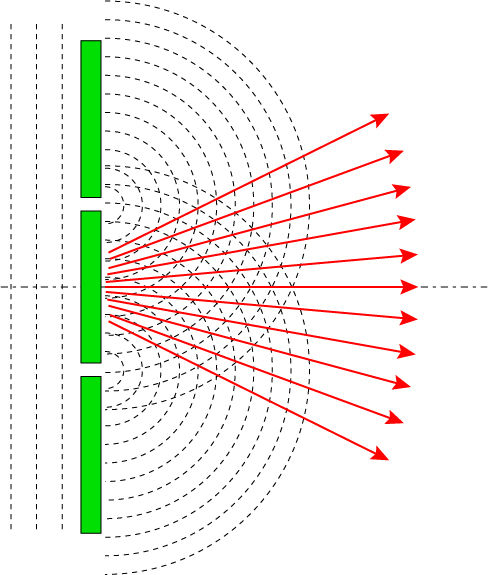
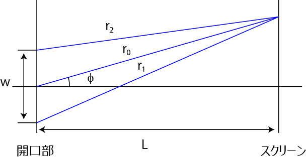

点像分布関数 (PSF , Point spread function) について-02
二つの開口部から発せられた波は回折現象を起こします．
そして，波と波が強め合ったり，弱めあったりします．
図の点線を波の周期とすると，ちょうど点線が交差した場所が強め合うところとなります．
赤線が，その強めあった点を結んだものです．
図からわかるように，光強度が強い場所と弱い場所が交互に現れます．

この光強度の間隔が二つの開口部の間隔，波長などとどう関係するかを考えていきましょう．
次の図で考えてみます．

wだけ離れた二点の開口部から波が発生し，r1, r2の距離を経て，Lだけ離れたスクリーンに到達します．
その位置は二点の開口部の中心から，φ，の角度となります．
それぞれの開口部からは波が同心円状に広がっていくのですが，その波形は，
\( \Large cos ( k \ r - \omega \ t + \theta_0) \)
と表すことができます．
もう少し，中身を説明すると，
kr：ｒの距離での波形の状態を示します（ｋ：波数，ｋ＝２π/λ）
ωｔ：時間とともに変化する項です
θ0：開口部から発せられる際の位相です．
となります．
ここで，重要なのは，
二つの開口部から発せられた（r1，r2を通って）波がどう強め合うか，弱め合うか
ですので，重要なのは，
最初の項の，kr（kr1，kr2）
となります．
さて，この二つの波の合成波は，
\( \Large cos ( k \ r_1 - \omega \ t + \theta_0) + cos ( k \ r_2 - \omega \ t + \theta_0)\)
ですので，一番強め合う条件は，
\( \Large k \ r_1 - k \ r_2 = 2 \pi n \)
（ｎは整数）
となります．
では，次のページにこの計算をしてみましょう．